相信国运，定投科创。珍爱生命，远离纳指。
Personal homepage
匡子闲
我是匡子闲，一名后端工程师。我做了 EasyOffer，帮工程师把 GitHub 上做过的项目写进简历。另一个作品是 EasyLife，输入日常问题，就能找到相关建议和出处。
I'm 匡子闲 (kuangzixian), a backend engineer. I built EasyOffer to help engineers turn their GitHub work into a résumé, and EasyLife so readers can look up everyday questions and trace the advice back to its source.
1,267
累计阅读小时
hours read
2,001
有效阅读天数
days with reading
108
读完的书
books finished
38
今年读过 · 读完 11 本
opened in 2026 · 11 finished
说说
Mood即刻上一些还找得到的句子。知乎上有 71 条回答、1,301 个赞同，但回答列表接口未能打开，这里先不罗列单条内容。
A few lines still visible on Jike. The Zhihu profile shows 71 answers and 1,301 upvotes, but the answers list could not be fetched, so individual answers are not listed here.
距离生产端越近，距离消费端就越远。
落枕做理疗的时候想，朱自清他爸可能也是因为落枕了🤔
就这么听着歌，看完一本小说，无所事事也挺好。要是不感冒就更棒了😏
像《东京八平米》里面描述的一样，第一次体验🤓
多喝咖啡！
读书
Reading来自微信读书，检索于 2026-11-14（Asia/Shanghai）。统计数字是官方汇总口径，可能包含未出现在公开书架上的记录。下面的书单、封面、划线和想法只展示公开书架里的内容；已排除 9 本私密书和「文章收藏」。
From WeChat Reading, retrieved on 14 Nov 2026 (Asia/Shanghai). Official totals may include records not on the public shelf. Titles, covers and notes below are public-shelf items only; 9 private books and the “Articles” entry are omitted.
2026 年阅读进度2026 reading progress
截至 2026-11-14。数字来自微信读书官方统计，不是逐日打卡热力图。
As of 14 Nov 2026. Official WeChat Reading totals, not a day-by-day heatmap.
这一年已过Year elapsed
318 / 365
其中有阅读Days with reading
227 / 318
11 月November
14 / 14
今年已读 38 本、读完 11 本；11 月截至检索日，每天都有阅读。
38 books opened and 11 finished this year. In November, every day up to the retrieval date had reading.
累计
总时长1,267小时7分钟
有效阅读2,001 天
读过 / 读完376本 / 108本
笔记1545条
内容偏好文学
时段偏好夜晚
2026 年
时长232小时6分钟
有效阅读227天
自然日均43分钟
读过 / 读完38本 / 11本
偏好文学
2026 年 11 月
时长2小时10分钟
有效阅读14天
自然日均9分钟
读过 / 读完2本 / 1本
偏好个人成长
分类偏好
按时长排列，来自官方阅读统计。
正在读
Go语言底层原理剖析
郑建勋
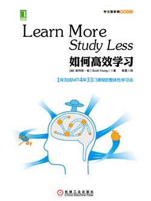
如何高效学习：1年完成麻省理工4年33门课程的整体性学习法 重读
斯科特·扬
因为独特
李翔
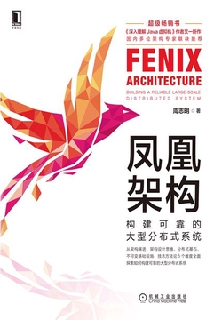
凤凰架构：构建可靠的大型分布式系统
周志明
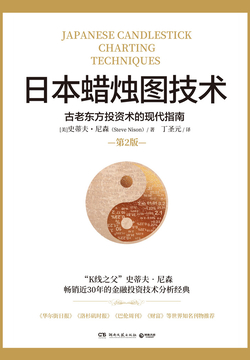
日本蜡烛图技术：古老东方投资术的现代指南
史蒂夫·尼森
撒旦探戈（2025诺奖得主作品）
[匈牙利]克拉斯诺霍尔卡伊·拉斯洛
读完
官方统计累计读完 108 本、今年 11 本。这里只列出公开书架上能核对到读完时间的书。
Official totals: 108 finished in all, 11 this year. Only public-shelf titles with a finish date are listed here.
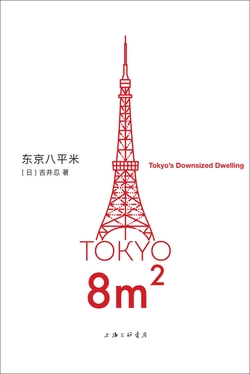
东京八平米
吉井忍
如何高效学习：1年完成麻省理工4年33门课程的整体性学习法
斯科特·扬
Go语言精进之路：从新手到高手的编程思想、方法和技巧1
白明
Head First Go语言程序设计
杰伊·麦克格瑞恩
几本简介
简介摘自微信读书的书籍介绍，略作截取，不是我自己写的书评。
Short blurbs are taken from WeChat Reading’s official book introductions, not personal reviews.
东京八平米
吉井忍
日籍华语作家吉井忍的全新散文集，是其对在东京亲手建立起另一种日常的记录。八平米在日本被称为“四畳半”，即只有四个半榻榻米大小的房间，租金便宜。
如何高效学习：1年完成麻省理工4年33门课程的整体性学习法
斯科特·扬
一位因为快速学习而成名的神奇小子，他应用自己发明的学习方法，完成了10天搞定线性代数，1年学习4年MIT课程的“不可能任务”。
Go语言精进之路：从新手到高手的编程思想、方法和技巧1
白明
Go入门容易，精进难，如何才能像Go开发团队那样写出符合Go思维和语言惯例的高质量代码呢？本书将从编程思维和实践技巧2个维度给出答案，帮助你在Go进阶的路上事半功倍。
因为独特
李翔
“详谈”系列是知名商业记者李翔撰写的系列人物访谈，“详谈·商业现场”是对仍在一线的企业家的采访，带着来自现场的粗粝与力量、残酷与希望，是一部以人为单位的价值创造史。
笔记与划线
从公开书架里笔记较多的书中选了一部分自己的划线和想法。笔记总数按「想法 + 划线 + 书签」计算；这里不展示书签内容，也不收录他人书评。
A selection of my own highlights and thoughts from public-shelf books with the most notes. Totals use thoughts + underlines + bookmarks; bookmark text and third-party reviews are not included.
东京八平米 9 条笔记
- 划线
我想把这本书悄悄地献给将要创建新生活的人。你的“小”不成问题，因为外面的世界足够大。
- 划线
只要能够保持基本的卫生条件（包括采光和通风）以及健康需求（包括噪音小和空气质量好），房间的大小或装修好坏和你的幸福指数没有太大的关系，更重要的反而是人际关系和你的行动力。
- 划线
若在北京或台北，我肯定会骂他一句“看什么看！”但这句用中文讲起来才爽，而日语只能说成“你看我干吗呢（何見てるんですか）”，有点长，语气笨拙
Go语言精进之路：从新手到高手的编程思想、方法和技巧1 62 条笔记
- 划线
Rob Pike的观点：“并发关乎结构，并行关乎执行。”
- 划线
defer让进行资源释放（如文件描述符、锁）的过程变得优雅很多，也不易出错。但在性能敏感的程序中，defer带来的性能负担也是Gopher必须知晓和权衡的。
- 划线
当使用close函数关闭channel时，所有阻塞到该channel上的goroutine都会得到通知
- 划线
append、cap、len、make、new等内置函数是不可以直接作为deferred函数的，而close、copy、delete、print、recover等可以。
Head First Go语言程序设计 59 条笔记
- 想法
可以在一个单独的函数中放置一个recover调用，并在引发panic的代码之前使用defer调用该函数。
妙哇
- 划线
调用panic应该留给“不可能的”情况：错误表示的是程序中的错误，而不是用户方面的错误。
- 划线
“defer”关键字确保函数调用发生，即使调用函数提前退出了。
- 划线
在同一个包中定义多个同名的函数不被允许，即使它们有不同类型的参数。你可以定义多个相同名字的方法，只要它们分别属于不同的类型。
Go语言底层原理剖析 48 条笔记
- 想法
但是在Go语言使用range时，变量k是一个堆上地址不变的对象，该地址存储的值会随着range遍历而发生变化。如果此时我们将变量k的地址放入协程save，以提供并发存储而不堵塞程序，那么最后的结果可能是后面的数据覆盖前面的数据，同时导致一些数据不被存储，并且每一次执行完存储的数据也是不明确的。
Go 1.22解决了这个问题，现在直接调用没问题的
- 划线
如果你不知道如何退出一个协程，那么就不要创建这个协程
- 划线
如果有一个长期运行的Goroutine并定期有defer和recover调用，则程序内存的使用量可能无限增长。
- 划线
context在很大程度上利用了通道在close时会通知所有监听它的协程这一特性来实现
亲密关系（第6版） 56 条笔记
- 想法
另一个复杂之处是个体的CLalt是他/她主观认识的产物，从而存在一系列因素影响着人们对它的认知。自尊就是影响因素之一。如果人们不喜欢自己，他们会怀疑自己的吸引力，从而会低估自己与其他替代伴侣相处的前景
这也是为什么一些优秀的女生会被PUA
- 划线
理想容易黯淡，魔咒会被打破，戏法终将被戳穿……浪漫随着时间推移而逐渐消逝，因为熟悉能使人更现实、毫无保留地审视对方；晌午刺眼的阳光最终驱散了月亮留下的迷人光晕
- 划线
女性的友谊是“面对面”(face-to-face)，而男性的友谊则是“肩并肩”(side-by-side)。
- 划线
失去通常比同等程度的得到对我们的影响更大；我们喜欢得到，但我们更憎恨失去
高性能MySQL（第4版） 31 条笔记
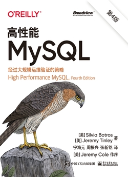
- 划线
InnoDB默认为REPEATABLE READ隔离级别，并且通过间隙锁(next-key locking)策略来防止在这个隔离级别上的幻读：InnoDB不只锁定在查询中涉及的行，还会对索引结构中的间隙进行锁定，以防止幻行被插入。
- 划线
MVCC的工作原理是使用数据在某个时间点的快照来实现的。这意味着，无论事务运行多长时间，都可以看到数据的一致视图，也意味着不同的事务可以在同一时间看到同一张表中的不同数据！
- 划线
最好不要在应用程序中混合使用存储引擎。失败的事务可能导致不一致的结果，因为某些部分可以回滚，而其他部分不能回滚。
股市趋势技术分析（原书第10版） 30 条笔记
- 想法
我们对止损指令的强调有所减弱，因为与新手相比，经验丰富的交易者不那么需要止损指令。
我也从来不止损，不说话装高手。。。。。
- 划线
华尔街有一个经典说法：股票涨起来需要买盘推动，跌起来却像自由落体。
- 划线
股价停留在三角形区域的时间越久，该形态的效力就越小（这恰恰与弹簧的原理相反）。
操作系统导论 22 条笔记
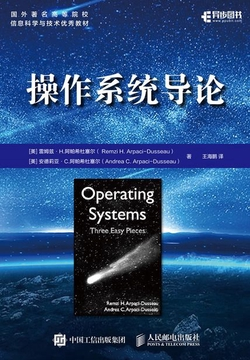
- 划线
即使它正确运行过一次，也不意味着它是正确的。
- 划线
自旋锁不提供任何公平性保证。实际上，自旋的线程在竞争条件下可能会永远自旋。自旋锁没有公平性，可能会导致饿死。
- 划线
与进程相比，线程之间的上下文切换有一点主要区别：地址空间保持不变（即不需要切换当前使用的页表）。
书架
公开书架 179 本电子书 + 2 本有声书，按最近阅读排列。
179 public ebooks and 2 audiobooks, sorted by last read.
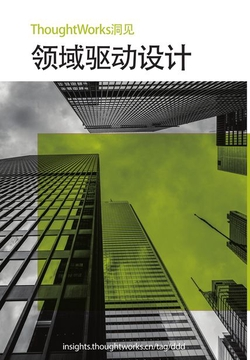
领域驱动设计（Thoughtworks洞见）
ThoughtWorks中国
黑凤凰
郑证因
致敬本格推理黄金时代（套装共6册）
[日]岛田庄司 [日]江户川乱步 [法]保罗·霍尔特等
穷查理宝典 有声书
中信出版君
因为独特
李翔
撒旦探戈（2025诺奖得主作品）
[匈牙利]克拉斯诺霍尔卡伊·拉斯洛
凤凰架构：构建可靠的大型分布式系统
周志明
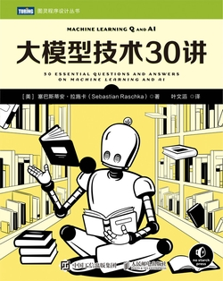
大模型技术30讲
[美]塞巴斯蒂安·拉施卡
日本蜡烛图技术：古老东方投资术的现代指南
史蒂夫·尼森
东京八平米 读完
吉井忍
如何高效学习：1年完成麻省理工4年33门课程的整体性学习法 读完
斯科特·扬
君主论
尼科洛·马基雅维利
Go语言底层原理剖析
郑建勋
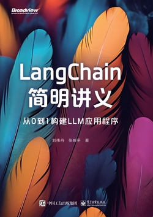
LangChain简明讲义：从0到1构建LLM应用程序
刘伟舟
深入理解TypeScript
Basarat Ali Syed
以交易为生：20余年惊人获利，短线交易大师的内训体系
[美]迈克·贝拉菲奥雷
思考，快与慢 有声书
中信出版君
Vibe Coding：AI 编程时代的认知重构
张昕东
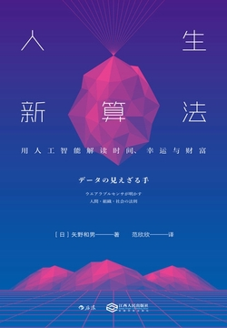
人生新算法：用人工智能解读时间、幸运与财富
矢野和男
红楼梦（全集）（果麦经典）
[清]曹雪芹
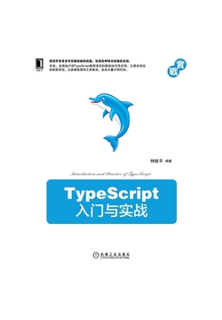
TypeScript入门与实战
钟胜平编著
动物庄园（奥威尔作品集）
乔治·奥威尔
了不起的盖茨比（英文版｜同名电影原著）
弗·司各特·菲茨杰拉德
金瓶梅（崇祯本原版）
[明]兰陵笑笑生
迭代：新商业，新媒体与逆袭之路
沈帅波
基层中国的运行逻辑
聂辉华
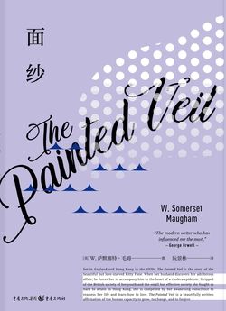
面纱（珍藏版）
[英]W.毛姆·萨默塞特
我身上有个不可战胜的夏天
[法]阿尔贝·加缪
雪球专刊·特别版：段永平投资问答录投资逻辑篇
雪球专刊
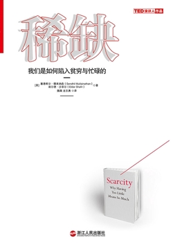
稀缺：我们是如何陷入贫穷与忙碌的
塞德希尔·穆来纳森
天之下
三弦
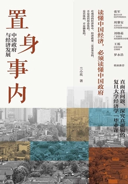
置身事内：中国政府与经济发展
兰小欢
大秦帝国（套装版）
孙皓晖
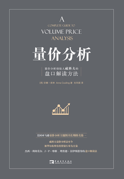
量价分析：量价分析创始人威科夫的盘口解读方法
安娜·库林
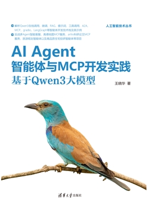
AI Agent智能体与MCP开发实践：基于Qwen3大模型
王晓华
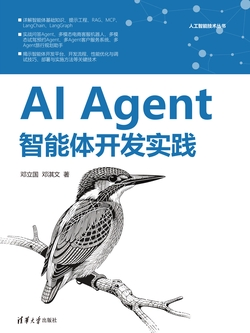
AI Agent智能体开发实践
邓立国 邓淇文
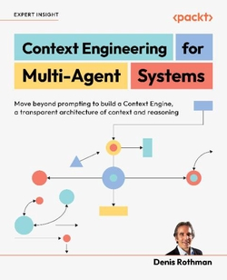
Context Engineering for Multi-Agent Systems
Denis Rothman
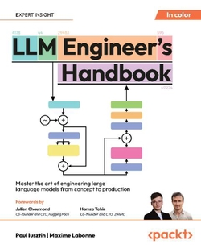
LLM Engineer's Handbook
Paul Iusztin Maxime Labonne Julien Chaumond Hamza Tahir Antonio Gulli
毛泽东传（全6卷）
中共中央文献研究室
仁慈的关系（2025诺奖得主作品）
[匈牙利]克拉斯诺霍尔卡伊·拉斯洛
启示录
赵祥亦
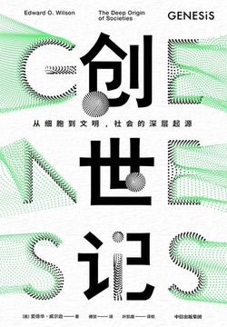
创世记：从细胞到文明，社会的深层起源
爱德华·威尔逊
不拘一格：网飞的自由与责任工作法
里德·哈斯廷斯 艾琳·迈耶
蛇结（果麦经典）
[法]弗朗索瓦·莫里亚克
温克海姆男爵返乡（2025诺奖得主最新作品，《撒旦探戈》续篇）
[匈牙利]克拉斯诺霍尔卡伊·拉斯洛
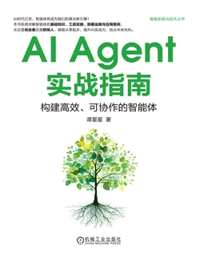
AI Agent实战指南：构建高效、可协作的智能体
谭星星
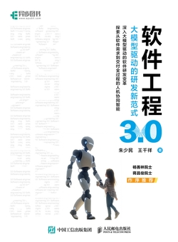
软件工程3.0：大模型驱动的研发新范式
朱少民 王千祥
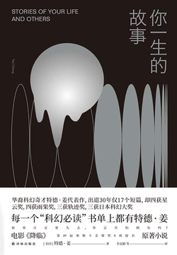
你一生的故事（译林幻系列）
特德·姜
金阁寺（2025经典无删减版）
[日]三岛由纪夫著 黄洪涛译
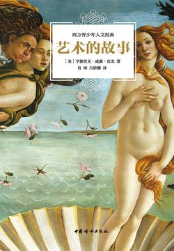
艺术的故事
房龙
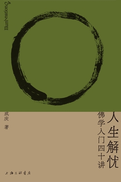
人生解忧：佛学入门四十讲
成庆
TypeScript全栈开发
赵卓
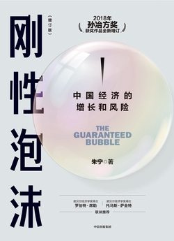
刚性泡沫（增订版）：中国经济的增长和风险
朱宁
架构解密：从分布式到微服务（第2版）
吴治辉
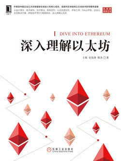
深入理解以太坊
王欣 史钦锋 程杰
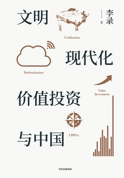
文明、现代化、价值投资与中国
李录
不被大风吹倒（莫言陪女儿高考也这样！ ）
莫言
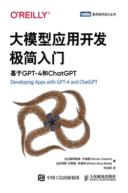
大模型应用开发极简入门：基于GPT-4和ChatGPT
奥利维耶·卡埃朗 [法]玛丽-艾丽斯·布莱特
晴耕雨读，得闲饮茶
季羡林 汪曾祺 梁实秋 等
芒格之道——查理·芒格股东会讲话1987-2022
查理·芒格 芒格书院
三国演义（人民文学版）
[明]罗贯中
深入浅出Node.js
朴灵
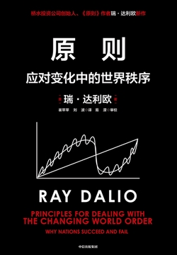
原则：应对变化中的世界秩序
瑞·达利欧
时间贫困
[英]凯茜·霍姆斯
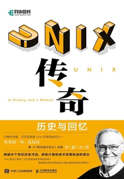
UNIX传奇：历史与回忆
布莱恩·W.克尼汉
河边的错误（朱一龙主演同名电影原著｜微信读书联合出品）
余华
一九八四（译文经典）
乔治·奥威尔
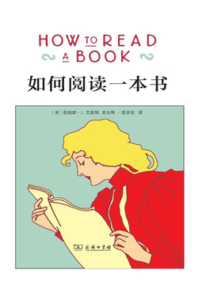
如何阅读一本书
莫提默·艾德勒 查尔斯·范多伦
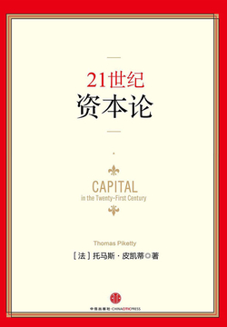
21世纪资本论
托马斯·皮凯蒂
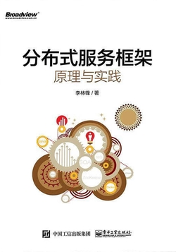
分布式服务框架原理与实践
李林锋
美丽新世界（译文经典）
奥尔德斯·赫胥黎
Go语言精进之路：从新手到高手的编程思想、方法和技巧1 读完
白明
操作系统导论
雷姆兹·H.阿帕希杜塞尔 安德莉亚·C.阿帕希杜塞尔
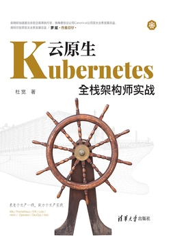
云原生Kubernetes全栈架构师实战
杜宽
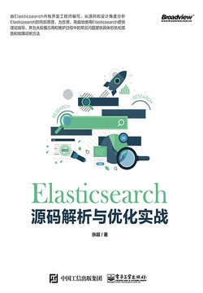
Elasticsearch源码解析与优化实战
张超
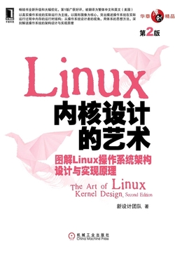
Linux内核设计的艺术：图解Linux操作系统架构设计与实现原理（第2版）
新设计团队
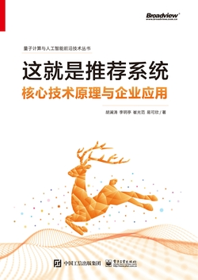
这就是推荐系统：核心技术原理与企业应用
胡澜涛 等
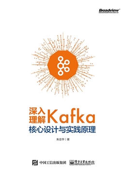
深入理解Kafka：核心设计与实践原理
朱忠华
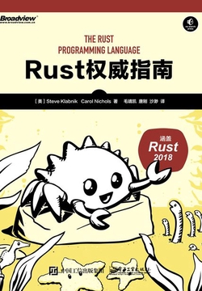
Rust权威指南
史蒂夫·克拉伯尼克 卡罗尔·尼科尔斯
平凡的世界（全三册）
路遥
毛泽东传：名著珍藏版（插图本）
罗斯·特里尔
高性能MySQL（第4版）
Silvia Botros Jeremy Tinley
计算机网络
谢希仁编著
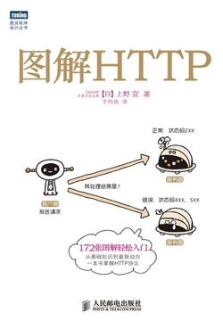
图解HTTP
上野宣
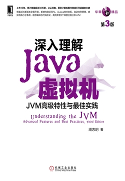
深入理解Java虚拟机：JVM高级特性与最佳实践（第3版）
周志明
全球通史
乔治·威尔斯 卡尔顿·海斯
苏东坡的生活禅
师雅惠
弃长安（《长安三万里》背后的大唐之变和历史真相）
张明扬
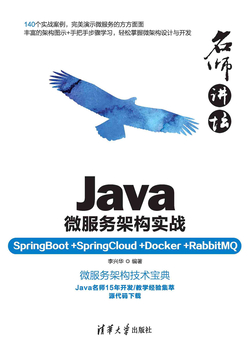
名师讲坛：Java微服务架构实战（SpringBoot+SpringCloud+Docker+RabbitMQ）
李兴华
Head First Go语言程序设计 读完
杰伊·麦克格瑞恩
云原生应用架构：微服务开发最佳实战
FreeWheel核心业务系统开发团队
用Go语言自制解释器
索斯藤·鲍尔
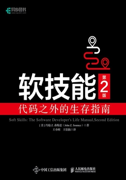
软技能：代码之外的生存指南（第2版）
约翰·Z.森梅兹
人性的弱点（果麦经典）
卡耐基
微服务治理：体系、架构及实践
李鑫
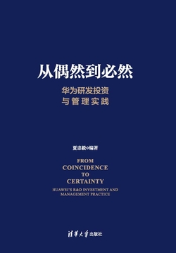
从偶然到必然：华为研发投资与管理实践
夏忠毅
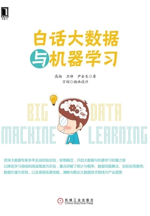
白话大数据与机器学习
高扬 卫峥 尹会生等
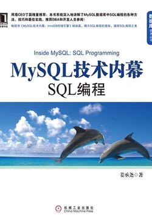
MySQL技术内幕：SQL编程
姜承尧
超实用15000词分类速记
俞敏洪
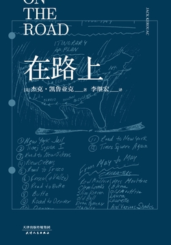
在路上（李继宏译版）
杰克·凯鲁亚克
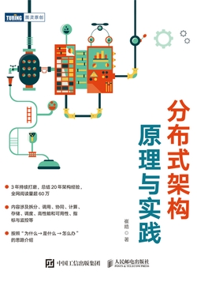
分布式架构原理与实践
崔皓 著
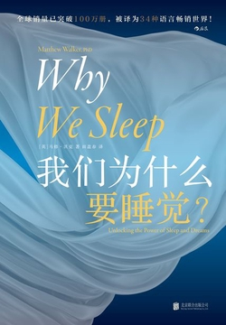
我们为什么要睡觉？
马修·沃克
历史深处的忧虑：近距离看美国之一
林达
聪明的投资者（第4版，注疏点评版）
[美]本杰明·格雷厄姆 [美]贾森·兹威格 著
Go语言精进之路：从新手到高手的编程思想、方法和技巧2
白明
银河系搭车客指南（五部曲套装）
道格拉斯·亚当斯
埃隆·马斯克传
沃尔特·艾萨克森
SQL进阶教程（第2版）
[日]MICK
反脆弱：从不确定性中获益
纳西姆·尼古拉斯·塔勒布
股市趋势技术分析（原书第10版）
罗伯特D.爱德华兹 约翰·迈吉 W.H.C.巴塞蒂
证券分析：投资者的圣经
[美]本杰明·格雷厄姆 [美]戴维·多德
剑指Offer
何海涛著
亲密关系（第6版）
[美]罗兰·米勒
金融炼金术（令全球投资者醍醐灌顶的著作）
乔治·索罗斯
海边的卡夫卡
[日]村上春树
信任代理
克里斯·布洛根 朱利恩·史密斯
病人家属，请来一下（译文科学）
王兴
向心城市：迈向未来的活力、宜居与和谐
陆铭
大国大城：当代中国的统一、发展与平衡
陆铭
奥本海默传（诺兰导演电影《奥本海默》 灵感来源、普利策奖获奖传记）
[美]凯·伯德 [美]马丁·J.舍温
被检验的人生：哲学沉思（二十世纪西方哲学经典）
罗伯特·诺齐克
百年孤独
[哥]加西亚•马尔克斯
规模
杰弗里·韦斯特
霍乱时期的爱情
[哥]加西亚•马尔克斯
中国历代政治得失(汉英对照)(博雅双语名家名作)
钱穆
历代经济变革得失
吴晓波
资本论（超值白金版）
[德]马克思
贫穷的本质：我们为什么摆脱不了贫穷（修订版）
[美]阿比吉特·班纳吉 [法]埃斯特·迪弗洛
x86汇编语言：从实模式到保护模式（第2版）
李忠 王晓波 余洁
快速阅读
克里斯蒂安·格吕宁
超级快速阅读
克里斯蒂安·格吕宁
影响力（全新升级版）
罗伯特·西奥迪尼
毛泽东选集（全四卷）
精通区块链编程：加密货币原理、方法和应用开发（原书第2版）
安德烈亚斯·M.安东波罗斯
囚徒健身：用失传的技艺练就强大的生存实力
保罗·威德
性能之巅：洞悉系统、企业与云计算
布兰登·格雷格
算法（第4版）
Robert Sedgewick Kevin Wayne
鲁迅全集（全20卷）
鲁迅
计算机是怎样跑起来的
矢泽久雄
计算机系统解密：从理解计算机到编写高效代码
乔纳森·E.斯坦哈特
海龟交易法则（第3版）
柯蒂斯·费思
剑指Offer（专项突破版）：数据结构与算法名企面试题精讲
何海涛
程序员必读经典（算法基础+计算机系统）
科尔曼 钱晓捷
程序员代码面试指南：IT名企算法与数据结构题目最优解（第2版）
左程云
Kafka权威指南
妮哈·纳克海德 格温·沙皮拉 托德·帕利诺
程序员面试金典（第6版）
盖尔·拉克曼·麦克道尔
生命密码（套装共2册）
尹烨
巴菲特致股东的信：投资者和公司高管教程（原书第4版）
沃伦E.巴菲特 劳伦斯A.坎宁安
高效能人士的七个习惯（30周年纪念版）（全新增订版）
史蒂芬·柯维
技术领导力：程序员如何才能带团队
周明耀
编程之美
《编程之美》小组
算法之美
布莱恩·克里斯汀 汤姆·格里菲思
自私的基因（40周年增订精装版）
理查德·道金斯
刑法学讲义：第二版
罗翔
福尔摩斯探案全集（图注本）（全9册）
柯南·道尔
哥儿
夏目漱石
MySQL技术内幕：InnoDB存储引擎(第2版)
姜承尧
深入理解计算机网络
王达
支付方法论
王伟
MongoDB权威指南（第2版）
Kristina Chodorow
读英国《金融时报》学英语（二）（套装10本）
[英]英国《金融时报》
大雪无痕
陆天明
概率论与数理统计
同济大学数学系
八百万种死法
劳伦斯·布洛克
程序员修炼之道：从小工到专家
Andrew Hunt David Thomas
美国陷阱
弗雷德里克·皮耶鲁齐 马修·阿伦
一生的旅程：迪士尼CEO自述
罗伯特·艾格 乔尔·洛弗尔
财富的起源：探讨关税对财富根源的作用
埃里克·拜因霍克
奇鸟行状录
[日]村上春树
历史的温度（全四册-独家定制版）
张玮
爱的博弈：建立信任、避免背叛与不忠
约翰·戈特曼 娜恩·西尔弗
经济学原理（超值白金版）
[英]马歇尔
博弈论
翟文明
Elasticsearch实战与原理解析
牛冬
结构性改革
黄奇帆
后疫情时代的中国经济（套装共21册）
吴晓波 王德培 管清友 秦朔等
千年金融史：金融如何塑造文明，从5000年前到21世纪
威廉·戈兹曼
持续交付：发布可靠软件的系统方法
Jez Humble David Farley
沉默的病人
亚历克斯·麦克利兹
图说世界格局
王伟
北洋夜行记
金醉 魔宙
音乐
Music来自网易云歌单「匡子闲喜欢的音乐」，共 286 首，导出于 2026-11-17 15:48（Asia/Shanghai）。按网易云「我喜欢的音乐」默认顺序解读：第1首视为最新收藏，第286首较早。用户未另行确认排序。分析来自收藏，不是播放次数。 完整可视化报告可在本站打开，不必访问外部分析页。
From the NetEase Cloud Music playlist “匡子闲喜欢的音乐”: 286 tracks, exported at 2026-11-17 15:48 (Asia/Shanghai). Read in NetEase Cloud Music’s default Liked Songs order: #1 is treated as the newest save, #286 as earlier. This order was not separately confirmed. The analysis is based on saves, not play counts. The full visual report is hosted on this site.
先把喜欢留下来A map of saved songs
依据286首收藏，不是播放次数。华语流行为主，民谣、日语与欧美流行并存。
Based on 286 saved songs, not play counts. Mandopop is the main line, with folk, Japanese, and Western pop also present.
- 286首收藏saved tracks
- 243位艺人（按参与计）artists (participations)
- 12首已核实推荐verified recommendations
出现最多的艺人Artists who appear most often
- 陈粒7
- G.E.M.邓紫棋7
- 陈奕迅6
- 王力宏6
- 莫文蔚5
- 李荣浩5
- 孙燕姿4
- 周杰伦4
- 张宇4
- 杨宗纬4
- 米津玄師4
- 毛不易4
次数含合作与不同发行，不是播放次数，也不能直接当流派比例。专辑上收藏较多的有：毛不易《平凡的一天》4 首、陈粒《如也》3 首、莫文蔚《就 i Karen 莫文蔚精选》2 首。
Counts include collaborations and different releases, not play counts, and are not genre shares. Albums with more saves: 毛不易 “平凡的一天” ×4; 陈粒 “如也” ×3; 莫文蔚 “就 i Karen 莫文蔚精选” ×2.
- 艺人次数按演唱参与计，合作曲会叠加，不能当作流派占比。
- 同一首歌的不同发行只增加覆盖，不重复计为独立偏好。
- 没有播放次数、听歌年份或音频特征值。
- Artist counts include collaborations and are not additive genre shares.
- Different releases of the same song add coverage, not extra preference votes.
- No play counts, listening years, or audio features are inferred.
Playlist: NetEase “匡子闲喜欢的音乐”
偏好
Taste华语流行
华语流行是歌单的主轴
Mandopop is the main line
陈奕迅、邓紫棋、王力宏、孙燕姿、林俊杰、周杰伦、莫文蔚等反复出现。
Eason Chan, G.E.M., Leehom Wang, Stefanie Sun, JJ Lin, Jay Chou and Karen Mok appear repeatedly.
286首里，华语流行艺人最显眼：陈奕迅有《富士山下》《十年》《红玫瑰》《孤勇者》，邓紫棋有成组的《泡沫》《喜欢你》《光年之外》，王力宏连续多首，孙燕姿、林俊杰、周杰伦、莫文蔚、李荣浩、郭静也反复出现。这是收藏密度最高的一条线，但不是唯一的线。
Across 286 songs, Mandopop artists are the most visible line: Eason Chan, a cluster of G.E.M. tracks, a run of Leehom Wang songs, plus Stefanie Sun, JJ Lin, Jay Chou, Karen Mok, Ronghao Li and Claire Kuo. It is the densest line, but not the only one.
- 富士山下 陈奕迅 — 较新一端的陈奕迅粤语代表作，说明这条线一直在延续。
- 泡沫 G.E.M.邓紫棋 — 邓紫棋成组收藏里的一首，和前后的《喜欢你》《后会无期》连在一起。
- 你不知道的事 王力宏 — 王力宏连续多首中的一首，体现的是成簇收藏，不是单曲点赞。
民谣叙事
城市民谣是第二条主线
City folk is the second line
陈粒、毛不易、赵雷、宋冬野、陈鸿宇、房东的猫在不同阶段反复出现。
Chen Li, Mao Buyi, Zhao Lei, Song Dongye, Chen Hongyu and 房东的猫 return across stages.
陈粒《走马》《小半》《易燃易爆炸》《历历万乡》覆盖《如也》与《小梦大半》。毛不易《消愁》《借》《一荤一素》《像我这样的人》集中来自《平凡的一天》。赵雷《成都》有两个发行，宋冬野《董小姐》也有两个版本。陈鸿宇、房东的猫让这条线不只是一两首歌。
Chen Li covers 如也 and 小梦大半; Mao Buyi’s 消愁, 借, 一荤一素 and 像我这样的人 come from the same album. Zhao Lei’s “成都” and Song Dongye’s “董小姐” each appear in two releases. Chen Hongyu and 房东的猫 show the line is more than one or two songs.
- 走马 陈粒 — 《如也》里的《走马》，是陈粒在歌单中最有代表性的一首。
- 消愁 毛不易 — 《平凡的一天》里的《消愁》，和同专辑多首一起出现。
- 成都 赵雷 — 赵雷《成都》的单曲版；另一发行在《无法长大》，只算覆盖。
版本覆盖
熟歌会以不同发行再出现
Familiar songs reappear in other releases
多首同名作品出现两次，增加的是发行覆盖，不是播放次数。
Several same-title tracks appear twice. That adds release coverage, not play counts.
《董小姐》有摩登天空7与《安和桥北》两个版本，《成都》《年少有为》《遇见》《Butter-Fly》《挪威的森林》《追光者》《护花使者》《Counting Stars》《红玫瑰》等也重复出现。这只说明同一作品被再次收进不同发行，不能推断哪一首听得更多，也不能当成两票偏好。
“董小姐” appears in both Modern Sky 7 and 安和桥北 editions; “成都”, “年少有为”, “遇见”, Butter-Fly and others also repeat. This only shows the same work was saved again in another release. It does not say which one was played more, and it should not count as two preference votes.
- 董小姐 宋冬野 — 《董小姐》的《安和桥北》版，是较新一端附近的一次再收藏。
- 董小姐 宋冬野 — 同一首歌的摩登天空7版，出现在歌单较早一端。
- 成都 赵雷 — 《成都》的《无法长大》版，和单曲版并存，只增加覆盖。
日语与动漫
日语流行和动漫歌是稳定支线
Japanese pop and anime songs are a steady side line
米津玄師、YOASOBI、GARNiDELiA 与动画、游戏原声多次出现。
Kenshi Yonezu, YOASOBI, GARNiDELiA, plus anime and game scores, appear more than once.
米津玄師有《Lemon》《LOSER》《打上花火》《打ち上げ花火》。YOASOBI《群青》在较新一端，旁边还有中文翻唱。GARNiDELiA《極楽浄土》与 MARiA 版并存。和田光司《Butter-Fly》出现两次，另有初音相关作品、名侦探柯南主题、Silent Hill 2 原声和一人之下曲目。汉字书写的日语曲会被语言计数低估。
Kenshi Yonezu appears with Lemon, LOSER and fireworks tracks; YOASOBI’s “群青” is near the newer end, with a Chinese cover nearby. GARNiDELiA and MARiA versions of 極楽浄土 both appear, as do Butter-Fly (twice), Vocaloid-related tracks, Detective Conan, Silent Hill 2 and Under One Person cues. Japanese titles written in kanji are easy to undercount.
- 群青 YOASOBI — YOASOBI《群青》出现在较新一端，旁边还有一首中文翻唱。
- Lemon 米津玄師 — 米津玄師《Lemon》说明日语流行不只是动画插入。
- 打上花火 Daoko、米津玄師 — 与 Daoko 合作的《打上花火》，连接日语流行和动画场景。
欧美与配乐
欧美流行和电影歌贯穿全单
Western pop and film songs run through the list
从较早一端的电影歌，到电音和老牌流行，这条线一直没有消失。
From earlier-end film songs to electronic and catalogue pop, this line never disappears.
较早一端已有《See You Again》《Love The Way You Lie》《Love Me Like You Do》。之后还有《Counting Stars》《Sugar》《Faded》、The Beatles《Norwegian Wood》、《City Of Stars》，以及克莱德曼和 Silent Hill 原声。它们分散在各阶段，不像某一时期的突发兴趣。
The earlier end already has See You Again, Love The Way You Lie and Love Me Like You Do. Later come Counting Stars, Sugar, Faded, The Beatles’ Norwegian Wood, City Of Stars, Clayderman piano and Silent Hill cues. They are spread across stages, not a short-lived burst.
- See You Again Wiz Khalifa、Charlie Puth — 较早一端的电影主题曲，说明欧美影视歌从一开始就在歌单里。
- City Of Stars (From "La La Land" Soundtrack) Ryan Gosling、Emma Stone — 《La La Land》插曲，把电影原声和欧美流行连在一起。
- Faded Alan Walker — Alan Walker《Faded》出现在中段，电音流行也被收进。
戏腔古风
戏腔、古风和民族色彩反复出现
Opera-tinged, guofeng and folk colors keep returning
任素汐、凤凰传奇、古风翻唱、红昭愿与民歌并不是偶尔点缀。
Ren Suxi, Phoenix Legend, guofeng covers, 红昭愿 and folk songs are not one-off ornaments.
较新一端有任素汐《王招君》、凤凰传奇《奢香夫人》、闻人听書_《虞兮叹》、额尔古纳乐队《鸿雁》。更早还有任素汐《我要你》、以冬和不才的古风翻唱、音阙诗听《红昭愿》、戴荃《悟空》、刀郎《西海情歌》、双笙《我的一个道姑朋友》。这条线跨越多段，不是单次尝鲜。
Near the newer end are Ren Suxi’s “王招君”, Phoenix Legend, 闻人听書_ and 鸿雁. Earlier stretches also have “我要你”, guofeng covers, 红昭愿, Dai Quan’s “悟空”, Dao Lang and 双笙. The line crosses several stages, not a single trial.
- 王招君 任素汐 — 任素汐《王招君》在较新一端，戏腔表现很突出。
- 奢香夫人 凤凰传奇 — 凤凰传奇《奢香夫人》把民族旋律放进流行编曲。
- 红昭愿 音阙诗听 — 音阙诗听《红昭愿》是古风流行里较常被收藏的一首。
风格时间线
Timeline九段按确认的旧→新方向排列。因为按默认顺序第1首是最新的，时间线从第286首读到第1首。编号是歌单位置，不是年份。
Nine stretches run from earlier saves to newer ones. Because #1 is treated as newest, the timeline reads from #286 to #1. Numbers are playlist positions, not years.
-
经典华语Classic Mandopop #286–#256
情歌与电影里的声音
Ballads and film songs
按默认顺序，这是歌单较早的一端
Songs and film music, at the earlier end
较早一端以华语情歌和影视主题曲为主：梁静茹《爱久见人心》、李健《传奇》、齐秦《大约在冬季》，以及周杰伦《红尘客栈》《不能说的秘密》、陈奕迅《十年》。郭静连续出现多首。同时收有《See You Again》等欧美电影歌曲。宋冬野《董小姐》是摩登天空7版。
The earlier end is mostly Mandopop ballads and film themes: Fish Leong, Li Jian, Chyi Chin, Jay Chou, Eason Chan, and a run of Claire Kuo tracks. Western film pop such as See You Again is already here. Song Dongye’s “董小姐” appears in the Modern Sky 7 edition.
华语情歌是底座，影视与欧美流行已经并存。
Mandopop ballads are the base; film and Western pop are already present.
十年 / 陈奕迅 · 红尘客栈 / 周杰伦 · See You Again / Wiz Khalifa、Charlie Puth
-
华语主力Mandopop core #255–#224
邓紫棋与王力宏成簇出现
G.E.M. and Leehom Wang appear in clusters
同一艺人的多首作品被连续收进歌单
Several artists appear in clusters
王力宏《依然爱你》《你不知道的事》《唯一》《我们的歌》《心中的日月》连成一串，邓紫棋《后会无期》《泡沫》《喜欢你》《你把我灌醉》也成组出现。旁边还有林俊杰《她说》、薛之谦《丑八怪》，以及《Counting Stars》《Sugar》、初音相关和马頔《南山南》。
Leehom Wang songs sit in a row, and G.E.M. also appears as a group, with JJ Lin, Xue Zhiqian, Counting Stars, Sugar, Vocaloid-related tracks and Ma Di’s “南山南” nearby.
流行偶像作品会成组收藏，不是零散点赞。
Idol-pop tracks are saved in clusters, not as isolated likes.
你不知道的事 / 王力宏 · 泡沫 / G.E.M.邓紫棋 · 她说 / 林俊杰
-
民谣城市City folk #223–#192
陈粒、成都与城市叙事
Chen Li, Chengdu, and city narratives
民谣叙事和钢琴小品一起出现
Folk narratives appear with piano pieces
这一段出现陈粒《小半》、赵雷《成都》、陈鸿宇《理想三旬》、李荣浩《老街》、戴荃《悟空》。理查德·克莱德曼的《秋日私语》《星空》也被收进，说明器乐小品可以和华语叙事并存。金玟岐《岁月神偷》、杨宗纬《洋葱》仍是华语流行旋律。
This stretch includes Chen Li’s “小半”, Zhao Lei’s “成都”, Chen Hongyu, Ronghao Li’s “老街”, and Dai Quan’s “悟空”. Richard Clayderman piano pieces sit beside them, along with Mandopop from Jin Wenqi and Aska Yang.
城市民谣开始与流行、器乐交错。
City folk begins to interleave with pop and instrumental pieces.
小半 / 陈粒 · 成都 / 赵雷 · 理想三旬 / 陈鸿宇
-
古风混编Guofeng mix #191–#160
陈粒加厚，古风翻唱并置
More Chen Li, with guofeng covers alongside
原作与翻唱、古风与电影歌混在同一段
Originals, covers, guofeng and film songs share the stretch
陈粒在这一段变密：《奇妙能力歌》《易燃易爆炸》《虚拟》《性空山》。旁边是以冬、不才的古风翻唱，以及任素汐《我要你》。同时再次出现 Eminem 的作品，还有《City Of Stars》《Galway Girl》。一人之下相关曲目也在其中。这是混编，不是单一风格替换。
Chen Li becomes denser here (奇妙能力歌, 易燃易爆炸, 虚拟, 性空山), next to guofeng covers and Ren Suxi’s “我要你”. Eminem, City Of Stars and Galway Girl also appear, as do Under One Person soundtrack tracks. This is a mix, not a style replacement.
陈粒作品加厚，古风翻唱与欧美影视并存。
Chen Li deepens; guofeng covers sit beside Western film pop.
易燃易爆炸 / 陈粒 · 我要你 / 任素汐 · City Of Stars (From "La La Land" Soundtrack) / Ryan Gosling、Emma Stone
-
跨界扩大Wider sources #159–#128
动漫、电音与华语并行
Anime, electronic, and Mandopop in parallel
华语之外的来源明显变多
Non-Chinese sources become more visible
这一段来源更杂：米津玄師与 Daoko《打上花火》、邓紫棋《光年之外》、音阙诗听《红昭愿》、岑宁儿《追光者》，也有 TheFatRat《Monody》、Carpenters《Yesterday Once More》。许巍《蓝莲花》《曾经的你》和陈鸿宇《一如年少模样》把华语摇滚与民谣留在同一段。
This stretch is more mixed: Kenshi Yonezu and Daoko’s “打上花火”, G.E.M.’s “光年之外”, “红昭愿”, “追光者”, plus TheFatRat and the Carpenters. Xu Wei and Chen Hongyu keep Chinese rock and folk in the same stretch.
收藏范围变宽，但仍不断回看华语。
The range widens, but the playlist keeps returning to Chinese songs.
打上花火 / Daoko、米津玄師 · 光年之外 / G.E.M.邓紫棋 · 红昭愿 / 音阙诗听
-
专辑加厚Album digging #127–#96
平凡之路与专辑深挖
Ordinary Path and deeper album saves
整专曲目和经典摇滚一起被收进来
Full-album tracks and classic rock are added
毛不易《像我这样的人》来自《平凡的一天》，李荣浩《年少有为》也在此出现。Beyond《海阔天空》《光辉岁月》、朴树《平凡之路》构成华语摇滚经典簇。陈粒《历历万乡》继续《如也》线。另有 Silent Hill 2 的《Promise》《Theme of Laura》，以及《Faded》和李健《贝加尔湖畔》。
Mao Buyi’s “像我这样的人” comes from the album 平凡的一天; Ronghao Li’s “年少有为” is here too. Beyond, Pu Shu, Chen Li’s “历历万乡”, Silent Hill 2 cues, Faded and Li Jian’s “贝加尔湖畔” share the stretch.
开始按专辑和经典专集补充，不只收单曲。
Saves start filling out albums and classics, not only singles.
像我这样的人 / 毛不易 · 海阔天空 / Beyond · 历历万乡 / 陈粒
-
再回民谣Folk again #95–#64
消愁、成都与李荣浩
Xiao Chou, Chengdu, and Ronghao Li
毛不易专辑曲与城市民谣再次集中
Mao Buyi album tracks and city folk concentrate again
毛不易《消愁》《借》《一荤一素》同属《平凡的一天》，和李荣浩《麻雀》《不将就》排在一起。赵雷《成都》是《无法长大》版，与前面的单曲版不是同一发行。还有陈奕迅《孤勇者》、房东的猫《云烟成雨》、米津玄師《Lemon》，以及伍佰的作品。华语民谣与流行再次拧紧。
Mao Buyi’s 消愁, 借 and 一荤一素 (all from 平凡的一天) sit with Ronghao Li. Zhao Lei’s “成都” here is the 无法长大 edition, not the earlier single. Eason Chan’s “孤勇者”, 房东的猫, Kenshi Yonezu’s Lemon and Wu Bai also appear.
同一专辑会被继续补完，城市民谣再次集中。
The same album continues to be completed; city folk concentrates again.
消愁 / 毛不易 · 成都 / 赵雷 · Lemon / 米津玄師
-
重听对照Re-saves #63–#32
走马、董小姐与再收藏
Zouma, Miss Dong, and re-saves
许多熟歌以不同发行再次进入歌单
Familiar songs re-enter in different releases
陈粒《走马》补上《如也》的重要一首。宋冬野《董小姐》是《安和桥北》版，与较早的摩登天空7版并存。孙燕姿《遇见》、李荣浩《年少有为》、和田光司《Butter-Fly》也以不同发行再出现。新加入的有草东没有派对《山海》、五月天《温柔》，以及米津玄師《LOSER》与《打ち上げ花火》。
Chen Li’s “走马” adds a key 如也 track. Song Dongye’s “董小姐” appears in the 安和桥北 edition beside the earlier Modern Sky 7 edition. Stefanie Sun, Ronghao Li and Butter-Fly also reappear in other releases, with new adds from No Party For Cao Dong, Mayday and Kenshi Yonezu.
熟歌换发行再收，同时补进摇滚与日语。
Familiar songs are saved again in other editions, while rock and Japanese tracks are added.
走马 / 陈粒 · 董小姐 / 宋冬野 · 山海 / 草东没有派对
-
最近收藏Latest saves #31–#1
晚风、富士山与戏腔回声
Evening wind, Fuji, and opera-tinged echoes
按默认顺序，第1首是最新收藏
By the default order, #1 is the newest save
按网易云「我喜欢的音乐」默认，第1首《晚风心里吹》视为最新。紧邻的是陈奕迅《富士山下》、孙燕姿《我怀念的》、李玟与周杰伦《刀马旦》。任素汐《王招君》、凤凰传奇《奢香夫人》、闻人听書_《虞兮叹》让戏腔和民族色彩再次出现。YOASOBI《群青》和许嵩《如果当时》说明主线仍是华语，来源更杂。
Under NetEase’s default Liked-Songs order, “晚风心里吹” is treated as the newest save, next to Eason Chan’s “富士山下”, Stefanie Sun, and Leehom/Jay’s “刀马旦”. Ren Suxi, Phoenix Legend and 闻人听書_ bring opera-tinged and folk colors back. YOASOBI’s “群青” and Xu Song show the main line is still Mandopop, just from more sources.
最新一端仍以华语流行为主，戏腔与日语穿插其中。
The newest end is still mainly Mandopop, with opera-tinged and Japanese tracks mixed in.
富士山下 / 陈奕迅 · 我怀念的 / 孙燕姿 · 王招君 / 任素汐
推荐
Recommendations12 首都不在这张歌单里，曲目和封面都已核对过来源。喜欢与否要听过才知道。
None of these 12 tracks were found in the playlist. Titles, artists and covers were verified against official sources. Whether they fit still depends on a listen.
大概率合口味Very likely
最佳损友
陈奕迅 · Life Continues…
歌单已收《富士山下》《十年》《红玫瑰》。这首同是陈奕迅粤语代表作，旋律与情感浓度接近，待听后确认。
歌单已收《富士山下》《十年》《红玫瑰》。这首同是陈奕迅粤语代表作，旋律与情感浓度接近，待听后确认。
可能的差别：粤语咬字和黄伟文词作更密，若更吃国语抒情可能会觉得密。
What may not fit: 粤语咬字和黄伟文词作更密，若更吃国语抒情可能会觉得密。
桥豆麻袋
陈粒 · 小梦大半
已收《如也》的《走马》《易燃易爆炸》和《小梦大半》的《小半》《虚拟》。此曲同属《小梦大半》，可补同一张专辑。
已收《如也》的《走马》《易燃易爆炸》和《小梦大半》的《小半》《虚拟》。此曲同属《小梦大半》，可补同一张专辑。
可能的差别：口气更俏皮、更短，如果只喜欢《走马》那种缓慢叙事，可能会觉得跳。
What may not fit: 口气更俏皮、更短，如果只喜欢《走马》那种缓慢叙事，可能会觉得跳。
平凡的一天
毛不易 · 平凡的一天
已收同专辑《消愁》《借》《一荤一素》《像我这样的人》，但标题曲尚未出现。用来补完这张专辑的主轴。
已收同专辑《消愁》《借》《一荤一素》《像我这样的人》，但标题曲尚未出现。用来补完这张专辑的主轴。
可能的差别：标题曲更沉、更慢，如果更吃《消愁》的合唱钩子，未必同样喜欢。
What may not fit: 标题曲更沉、更慢，如果更吃《消愁》的合唱钩子，未必同样喜欢。
来自天堂的魔鬼
G.E.M.邓紫棋 · 新的心跳
已收《泡沫》《喜欢你》《光年之外》《再见》。此曲同属强声线的流行编曲，用来试她偏暗、偏力度的一面。
已收《泡沫》《喜欢你》《光年之外》《再见》。此曲同属强声线的流行编曲，用来试她偏暗、偏力度的一面。
可能的差别：比《泡沫》更锐、更电子，若只喜欢她早期抒情，可能会觉得硬。
What may not fit: 比《泡沫》更锐、更电子，若只喜欢她早期抒情，可能会觉得硬。
模特
李荣浩 · 模特
已收《老街》《不将就》《麻雀》，以及两个发行的《年少有为》。这首是他同名专辑标题曲，声线和节奏都接近。
已收《老街》《不将就》《麻雀》，以及两个发行的《年少有为》。这首是他同名专辑标题曲，声线和节奏都接近。
可能的差别：口吻更俏皮，鼓点更跳，如果只喜欢他慢的叙事歌，不一定合。
What may not fit: 口吻更俏皮，鼓点更跳，如果只喜欢他慢的叙事歌，不一定合。
绿光
孙燕姿 · 风筝
已收《我怀念的》《遇见》《天黑黑》。这首是她早期快歌代表，用来看你是否也收她明快的一面。
已收《我怀念的》《遇见》《天黑黑》。这首是她早期快歌代表，用来看你是否也收她明快的一面。
可能的差别：节奏更快、更亮，和《我怀念的》的缓慢抒情差别明显。
What may not fit: 节奏更快、更亮，和《我怀念的》的缓慢抒情差别明显。
相邻风格Nearby style
安和桥
宋冬野 · 安和桥北
《董小姐》已收《安和桥北》和摩登天空7两个发行。此曲是同一张专辑的另一首代表作，待听后确认是否同路。
《董小姐》已收《安和桥北》和摩登天空7两个发行。此曲是同一张专辑的另一首代表作，待听后确认是否同路。
可能的差别：更沉、更冷，如果只喜欢《董小姐》的叙事亲切感，不一定停留。
What may not fit: 更沉、更冷，如果只喜欢《董小姐》的叙事亲切感，不一定停留。
青花瓷
周杰伦 · 我很忙
已收《刀马旦》《红尘客栈》《时光机》《不能说的秘密》，但《我很忙》里的中国风代表作尚未出现。
已收《刀马旦》《红尘客栈》《时光机》《不能说的秘密》，但《我很忙》里的中国风代表作尚未出现。
可能的差别：古典意象和细描比《晴天》或《不能说的秘密》更满，不一定人人都吃。
What may not fit: 古典意象和细描比《晴天》或《不能说的秘密》更满，不一定人人都吃。
夜に駆ける
YOASOBI · 夜に駆ける
已收 YOASOBI《群青》，以及米津玄師《Lemon》《打上花火》。此曲是同路的日语流行代表，用来验证这条支线。
已收 YOASOBI《群青》，以及米津玄師《Lemon》《打上花火》。此曲是同路的日语流行代表，用来验证这条支线。
可能的差别：叙事更急、电子编曲更满，若只喜欢《群青》的合唱感，未必同样停留。
What may not fit: 叙事更急、电子编曲更满，若只喜欢《群青》的合唱感，未必同样停留。
Skyfall
Adele · Skyfall - Single
歌单里已有《See You Again》《City Of Stars》《Love Me Like You Do》等电影歌。这首是同类的主题曲，声线更厚。
歌单里已有《See You Again》《City Of Stars》《Love Me Like You Do》等电影歌。这首是同类的主题曲，声线更厚。
可能的差别：比歌单里多数欧美流行更长、更戏剧，不是轻快的电台单曲。
What may not fit: 比歌单里多数欧美流行更长、更戏剧，不是轻快的电台单曲。
探索Explore
杀死那个石家庄人
万能青年旅店 · 万能青年旅店 同名专辑
已收草东没有派对《山海》，也有许巍、朴树、Beyond。此曲把城市叙事推到更冷、更乐队化的方向，用来试边界。
已收草东没有派对《山海》，也有许巍、朴树、Beyond。此曲把城市叙事推到更冷、更乐队化的方向，用来试边界。
可能的差别：编曲更瘦、词更密，和华语流行主轴距离明显，可能听不惯。
What may not fit: 编曲更瘦、词更密，和华语流行主轴距离明显，可能听不惯。
前前前世 (movie ver.)
RADWIMPS · 君の名は。
已收 YOASOBI 与米津的日语流行和动画相关曲。此曲来自电影《你的名字》，用来试日语电影主题曲是否也成立。
已收 YOASOBI 与米津的日语流行和动画相关曲。此曲来自电影《你的名字》，用来试日语电影主题曲是否也成立。
可能的差别：电影主题曲的铺陈更长，现场感与流行单曲不同，未必单独收藏。
What may not fit: 电影主题曲的铺陈更长，现场感与流行单曲不同，未必单独收藏。
桌游
Board games玩过、也爱玩的桌游。后面想起再补。下面只写公开的人数和类型，没有个人评分或对局次数。
Board games he has played and enjoys. More will be added later. Each entry lists only public player counts and genre, not personal ratings or play counts.
狼人杀Werewolf
Werewolf
狼人杀
社交推理派对游戏，人数视版本而定，常见 6–18 人。
A social deduction party game; player count depends on the edition, often 6–18.
阿瓦隆The Resistance: Avalon
The Resistance: Avalon
阿瓦隆
社交推理游戏，5–10 人，隐藏阵营、任务投票。
A social deduction game for 5–10 players, with hidden teams and quest votes.
璀璨宝石Splendor
Splendor
璀璨宝石
引擎构建卡牌游戏，2–4 人，收集宝石卡发展引擎。
An engine-building card game for 2–4 players, collecting gem cards to grow an engine.
ScoutScout
Oink Games 的爬梯出牌游戏，2–5 人。
A ladder-climbing card game from Oink Games, for 2–5 players.
炸弹猫Exploding Kittens
Exploding Kittens
炸弹猫
派对卡牌游戏，原版 2–5 人。
A party card game; the original edition is for 2–5 players.
花砖物语Azul
Azul
花砖物语
抽象铺砖游戏，2–4 人，起草花砖并摆进墙面。
An abstract tile-placement game for 2–4 players, drafting tiles onto a wall.
奶酪大盗Cheese Thief
Cheese Thief
奶酪大盗
社交推理聚会游戏，4–8 人，约 10–15 分钟。
A social deduction party game for 4–8 players, about 10–15 minutes.
推荐网站
Recommended sites推荐看看的网站。标了「自己做的」的是匡子闲自己的项目。后面想到再补。介绍只摘自站点自己的公开信息，没有编造。
Sites he recommends. Cards marked “Made by me” are his own projects. More will be added later. Descriptions are taken from the sites themselves and are not invented.
沈新宇（Sinyu）
sinyu1012.cn
沈新宇（Sinyu，GitHub @sinyu1012）的个人网站。上海移动端开发者，专注 Flutter、Android、iOS、AI 自动化与开源工具，分享个人项目、开发实践与作品。
好好生活
自己做的Made by me
easy-life.kznb.workers.dev
好好生活，把有出处的生活建议装进口袋。慢慢读、搜一搜、抽张卡，不用登录。
Easy Offer
自己做的Made by me
easy-offer.kznb.workers.dev
从真实项目出发，把你的工作写成一份更有说服力的简历。Easy Offer 支持 GitHub 项目整理、AI 简历与面试准备。
Tapa
puzzle-tapa.com
Tapa is a logic puzzle with a bit complicated rules and challenging solutions.
Nikke Game
watermelon.shinyou.ng
Play Watermelon Game! 수박게임을 플레이하세요!
Board Game Arena
zh-cn.boardgamearena.com
全球最大的在线桌游社区。超过1000款游戏可直接在浏览器中畅玩。
日志
Writing和 ChatGPT 的一些对话，按文章的方式放在这里。点进去是完整对话，内容在本站打开，不必访问 chatgpt.com。
A few conversations with ChatGPT, presented as writing. Each piece opens on this site, so it can be read without chatgpt.com.
AI 能攻破比特币吗？Can AI Break Bitcoin?
Bitcoin Core 已被 AI 找出过能把节点打挂的真实漏洞，但“攻破比特币”可能指四种完全不同的事。截至 2026 年 11 月 17 日，没有可靠证据表明 AI 已经能在不知道私钥的情况下花走别人的币。
AI has already found a real Bitcoin Core bug that can crash nodes, but “breaking Bitcoin” can mean four very different things. As of 17 Nov 2026, there is no reliable public evidence that AI can spend someone else’s coins without the private key.
别再优化人生的架构了，先把人生上线Stop Architecting Your Life. Ship It.
我让 GPT 根据过往聊天记录毫不留情地骂了我一顿。它从后端工程、创业规划、投资、小红书运营和用 AI 的方式说起，最后指出：我不是缺一个更强的模型，而是缺把事情做完并上线的执行力。
I asked GPT to roast me, no holding back, based on our past chats. It went after my backend work, startup plans, investing, Xiaohongshu ops, and how I use AI — and landed on this: I don’t need a stronger model, I need to ship something.
既要有不工作的自由，也要有影响世界的机会Freedom From Work, and the Chance to Shape the World
我问 GPT：如果 AI 帮助突破可控核聚变，普通人是否会变得只剩吃喝玩乐，只有少数明星研究员才有工作的特权。它认为物质极大丰富不一定等于精神极大自由，更值得争取的是：人既有不工作的自由，也有参与和影响世界的机会。
I asked whether a fusion-powered, AI-rich future would leave most people at home entertaining themselves, with only a few star researchers still allowed to work. GPT’s reply: abundance is not the same as freedom. The better goal is both the freedom not to work, and a real chance to shape the world.
项目
ProjectsGitHub 上确认是原创（非 fork）的公开仓库。没有简介的仓库只放名字，不编造说明。
Public GitHub repositories confirmed as originals (not forks). Repositories without a description are listed by name only.
JavaScript
EasyLife
EasyLife：基于 HowToLiveBetter 的微信小程序，支持顺序阅读、带出处的本地问句检索和随机建议卡片。
TypeScriptStrawberrrrrrry
本地优先的项目管理系统，支持 AI 智能问答、MCP 集成和多渠道通知。
A local-first project manager with AI Q&A, MCP integration, and multi-channel notifications.
TypeScriptEasyOffer
公开仓库，暂无简介。
Public repository; no description published.
留言板
Guestbook来坐坐，留个名字和一句话就行，不用登录。请不要放链接。
Leave a nickname and a short note. No login required. Please don’t include links.
正在载入留言…
Loading notes…
社交链接
Social只放已经核对过、显示名精确匹配「匡子闲」的主页。小红书、微博、抖音和 X 目前还没能公开确认，不编造链接。
Only profiles verified with the exact display name 匡子闲 are linked. Xiaohongshu, Weibo, Douyin and X could not be publicly confirmed, so no guessed URLs are included.
匡子闲
后端工程师
匡子闲
kuangzixian
显示名 匡子闲 · 公司字段 IFTech
匡子闲
计科，炒股
计算机软件 · 上海市
Headline: 计科，炒股
Computer software · Shanghai
小红书 · 微博 · 抖音 · X
检索时这些平台未能找到精确匹配的公开主页，或站点拦截了访问。确认账号后可以补上。
No exact-match public profile could be retrieved, or the site blocked access. Links can be added once the accounts are confirmed.